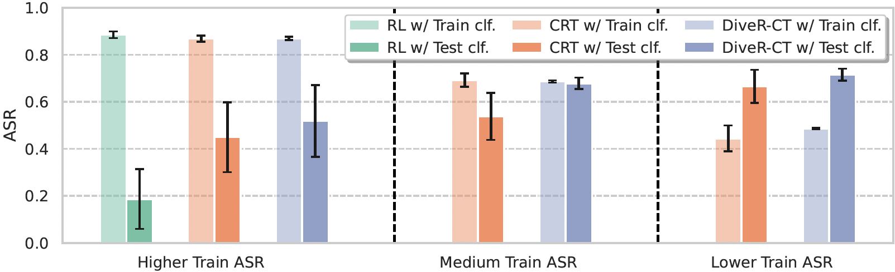
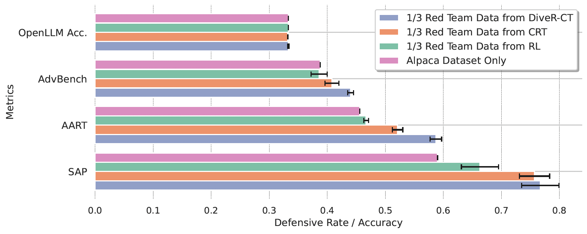

Abstract
Recent advances in large language model assistants have made them indispensable, raising significant concerns over managing their safety. Automated red teaming offers a promising alternative to the labor-intensive and error-prone manual probing for vulnerabilities, providing more consistent and scalable safety evaluations. However, existing approaches often compromise diversity by focusing on maximizing attack success rate. Additionally, methods that decrease the cosine similarity from historical embeddings with semantic diversity rewards lead to novelty stagnation as history grows. To address these issues, we introduce DiveR-CT, which relaxes conventional constraints on the objective and semantic reward, granting greater freedom for the policy to enhance diversity. Our experiments demonstrate DiveR-CT's marked superiority over baselines by 1) generating data that perform better in various diversity metrics across different attack success rate levels, 2) better-enhancing resiliency in blue team models through safety tuning based on collected data, 3) allowing dynamic control of objective weights for reliable and controllable attack success rates, and 4) reducing susceptibility to reward overoptimization. Overall, our method provides an effective and efficient approach to LLM red teaming, accelerating real-world deployment.
Methodology
Constrained Objectives to Relax Constraints
By casting automatic red teaming as a constrained policy optimization problem, we provide our policies with greater flexibility by relaxing the ASR maximization objective. This reformulation not only increases generation diversity but also mitigates reward overoptimization and generates more effective data for safety tuning.
Dynamic Semantic Diversity Reward
For a generation at time t+1 that is close to the last, CRT assigns a high reward, while DiveR-CT assigns a low k-NN reward, encouraging the policy to continuously discover novel generations.
Results
Main Results
DiveR-CT is able to outperform strong baselines across different attack success rate levels, demonstrating its ability to generate diverse and effective data for LLM red teaming.
| Method | ASR | Self-BLEU | Vendi-Ngram | Semantic Mean | Vendi-Semantic |
|---|---|---|---|---|---|
| RL (Perez et al. 2022) | 0.885 (±0.014) | 0.037 (±0.014) | 0.004 (±0.000) | 0.031 (±0.007) | 0.010 (±0.000) |
| CRT, Bsafe = 1.0 | 0.868 (±0.013) | 0.570 (±0.056) | 0.526 (±0.154) | 0.360 (±0.024) | 0.076 (±0.012) |
| Diver-CT, dsafe = -0.9 (ours) | 0.869 (±0.007) | 0.746 (±0.047) | 0.728 (±0.106) | 0.378 (±0.012) | 0.110 (±0.011) |
| CRT, Bsafe = 0.4 | 0.692 (±0.028) | 0.802 (±0.021) | 0.559 (±0.149) | 0.363 (±0.008) | 0.084 (±0.004) |
| Diver-CT, dsafe = -0.7 (ours) | 0.686 (±0.005) | 0.834 (±0.024) | 0.964 (±0.014) | 0.391 (±0.022) | 0.123 (±0.012) |
| CRT, Bsafe = 0.3 | 0.444 (±0.055) | 0.829 (±0.020) | 0.767 (±0.113) | 0.355 (±0.040) | 0.083 (±0.017) |
| Diver-CT, dsafe = -0.5 (ours) | 0.485 (±0.003) | 0.843 (±0.018) | 0.969 (±0.010) | 0.402 (±0.010) | 0.128 (±0.005) |
| Zero-shot | 0.001 (±0.000) | 0.533 (±0.008) | 0.659 (±0.004) | 0.018 (±0.001) | 0.010 (±0.000) |
Mitigating Overoptimization
We evaluate the extent of overoptimization by employing a test safety classifier, `DaNLP/da-electra-hatespeech-detection`. Our method achieves a more reduction in overoptimization.
Better Safety Tuning Data
We finetune the blue team model using a mix of successful red team queries and Alpaca dataset. This figure illustrates the robustness of response rate and OpenLLM Accuracy, demonstrating that safety tuning with DiveR-CT generated data better enhances LLM safety.
Citation
@inproceedings{zhao2025diver,
title={DiveR-CT: Diversity-enhanced Red Teaming Large Language Model Assistants with Relaxing Constraints},
author={Zhao, Andrew and Xu, Quentin and Lin, Matthieu and Wang, Shenzhi and Liu, Yong-Jin and Zheng, Zilong and Huang, Gao},
booktitle={Proceedings of the AAAI Conference on Artificial Intelligence},
volume={39},
year={2025}
}